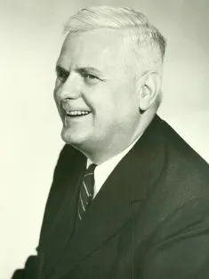
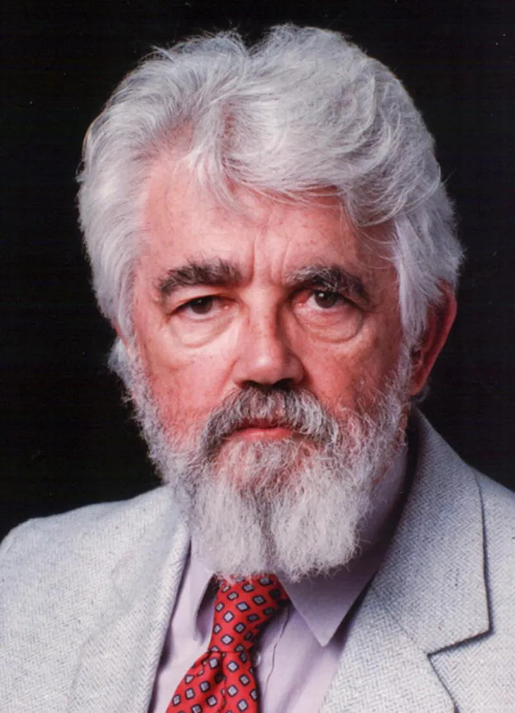
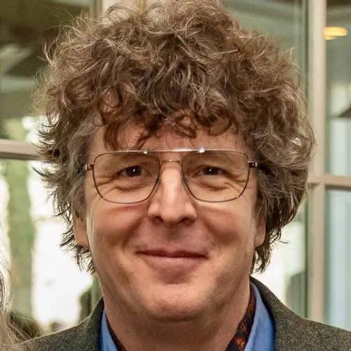

<!DOCTYPE html>
<html xmlns="http://www.w3.org/1999/xhtml" lang="en" xml:lang="en"><head>

<meta charset="utf-8">
<meta name="generator" content="quarto-1.8.25">

<meta name="viewport" content="width=device-width, initial-scale=1.0, user-scalable=yes">


<title>2&nbsp; The Wet Lambda</title>
<style>
code{white-space: pre-wrap;}
span.smallcaps{font-variant: small-caps;}
div.columns{display: flex; gap: min(4vw, 1.5em);}
div.column{flex: auto; overflow-x: auto;}
div.hanging-indent{margin-left: 1.5em; text-indent: -1.5em;}
ul.task-list{list-style: none;}
ul.task-list li input[type="checkbox"] {
  width: 0.8em;
  margin: 0 0.8em 0.2em -1em; /* quarto-specific, see https://github.com/quarto-dev/quarto-cli/issues/4556 */ 
  vertical-align: middle;
}
/* CSS for syntax highlighting */
html { -webkit-text-size-adjust: 100%; }
pre > code.sourceCode { white-space: pre; position: relative; }
pre > code.sourceCode > span { display: inline-block; line-height: 1.25; }
pre > code.sourceCode > span:empty { height: 1.2em; }
.sourceCode { overflow: visible; }
code.sourceCode > span { color: inherit; text-decoration: inherit; }
div.sourceCode { margin: 1em 0; }
pre.sourceCode { margin: 0; }
@media screen {
div.sourceCode { overflow: auto; }
}
@media print {
pre > code.sourceCode { white-space: pre-wrap; }
pre > code.sourceCode > span { text-indent: -5em; padding-left: 5em; }
}
pre.numberSource code
  { counter-reset: source-line 0; }
pre.numberSource code > span
  { position: relative; left: -4em; counter-increment: source-line; }
pre.numberSource code > span > a:first-child::before
  { content: counter(source-line);
    position: relative; left: -1em; text-align: right; vertical-align: baseline;
    border: none; display: inline-block;
    -webkit-touch-callout: none; -webkit-user-select: none;
    -khtml-user-select: none; -moz-user-select: none;
    -ms-user-select: none; user-select: none;
    padding: 0 4px; width: 4em;
  }
pre.numberSource { margin-left: 3em;  padding-left: 4px; }
div.sourceCode
  {   }
@media screen {
pre > code.sourceCode > span > a:first-child::before { text-decoration: underline; }
}
</style>


<script src="site_libs/quarto-nav/quarto-nav.js"></script>
<script src="site_libs/quarto-nav/headroom.min.js"></script>
<script src="site_libs/clipboard/clipboard.min.js"></script>
<script src="site_libs/quarto-search/autocomplete.umd.js"></script>
<script src="site_libs/quarto-search/fuse.min.js"></script>
<script src="site_libs/quarto-search/quarto-search.js"></script>
<meta name="quarto:offset" content="./">
<link href="./chapter_02.html" rel="next">
<link href="./index.html" rel="prev">
<link href="./notebooks/images/favicon.ico" rel="icon">
<script src="site_libs/quarto-html/quarto.js" type="module"></script>
<script src="site_libs/quarto-html/tabsets/tabsets.js" type="module"></script>
<script src="site_libs/quarto-html/axe/axe-check.js" type="module"></script>
<script src="site_libs/quarto-html/popper.min.js"></script>
<script src="site_libs/quarto-html/tippy.umd.min.js"></script>
<script src="site_libs/quarto-html/anchor.min.js"></script>
<link href="site_libs/quarto-html/tippy.css" rel="stylesheet">
<link href="site_libs/quarto-html/quarto-syntax-highlighting-dark-707d8167ce6003fca903bfe2be84ab7f.css" rel="stylesheet" id="quarto-text-highlighting-styles">
<script src="site_libs/bootstrap/bootstrap.min.js"></script>
<link href="site_libs/bootstrap/bootstrap-icons.css" rel="stylesheet">
<link href="site_libs/bootstrap/bootstrap-3201250c3049d367e50c9b8f56559e13.min.css" rel="stylesheet" append-hash="true" id="quarto-bootstrap" data-mode="dark">
<script id="quarto-search-options" type="application/json">{
  "location": "sidebar",
  "copy-button": false,
  "collapse-after": 3,
  "panel-placement": "start",
  "type": "textbox",
  "limit": 50,
  "keyboard-shortcut": [
    "f",
    "/",
    "s"
  ],
  "show-item-context": false,
  "language": {
    "search-no-results-text": "No results",
    "search-matching-documents-text": "matching documents",
    "search-copy-link-title": "Copy link to search",
    "search-hide-matches-text": "Hide additional matches",
    "search-more-match-text": "more match in this document",
    "search-more-matches-text": "more matches in this document",
    "search-clear-button-title": "Clear",
    "search-text-placeholder": "",
    "search-detached-cancel-button-title": "Cancel",
    "search-submit-button-title": "Submit",
    "search-label": "Search"
  }
}</script>


</head>

<body class="nav-sidebar floating quarto-light">

<div id="quarto-search-results"></div>
  <header id="quarto-header" class="headroom fixed-top">
  <nav class="quarto-secondary-nav">
    <div class="container-fluid d-flex">
      <button type="button" class="quarto-btn-toggle btn" data-bs-toggle="collapse" role="button" data-bs-target=".quarto-sidebar-collapse-item" aria-controls="quarto-sidebar" aria-expanded="false" aria-label="Toggle sidebar navigation" onclick="if (window.quartoToggleHeadroom) { window.quartoToggleHeadroom(); }">
        <i class="bi bi-layout-text-sidebar-reverse"></i>
      </button>
        <nav class="quarto-page-breadcrumbs" aria-label="breadcrumb"><ol class="breadcrumb"><li class="breadcrumb-item"><a href="./chapter_01.html"><span class="chapter-number">2</span>&nbsp; <span class="chapter-title">The Wet Lambda</span></a></li></ol></nav>
        <a class="flex-grow-1" role="navigation" data-bs-toggle="collapse" data-bs-target=".quarto-sidebar-collapse-item" aria-controls="quarto-sidebar" aria-expanded="false" aria-label="Toggle sidebar navigation" onclick="if (window.quartoToggleHeadroom) { window.quartoToggleHeadroom(); }">      
        </a>
      <button type="button" class="btn quarto-search-button" aria-label="Search" onclick="window.quartoOpenSearch();">
        <i class="bi bi-search"></i>
      </button>
    </div>
  </nav>
</header>
<!-- content -->
<div id="quarto-content" class="quarto-container page-columns page-rows-contents page-layout-article">
<!-- sidebar -->
  <nav id="quarto-sidebar" class="sidebar collapse collapse-horizontal quarto-sidebar-collapse-item sidebar-navigation floating overflow-auto">
    <div class="pt-lg-2 mt-2 text-left sidebar-header">
      <a href="./index.html" class="sidebar-logo-link">
      </a>
      </div>
        <div class="mt-2 flex-shrink-0 align-items-center">
        <div class="sidebar-search">
        <div id="quarto-search" class="" title="Search"></div>
        </div>
        </div>
    <div class="sidebar-menu-container"> 
    <ul class="list-unstyled mt-1">
        <li class="sidebar-item">
  <div class="sidebar-item-container"> 
  <a href="./index.html" class="sidebar-item-text sidebar-link">
 <span class="menu-text"><span class="chapter-number">1</span>&nbsp; <span class="chapter-title">A Laconic Odyssey</span></span></a>
  </div>
</li>
        <li class="sidebar-item">
  <div class="sidebar-item-container"> 
  <a href="./chapter_01.html" class="sidebar-item-text sidebar-link active">
 <span class="menu-text"><span class="chapter-number">2</span>&nbsp; <span class="chapter-title">The Wet Lambda</span></span></a>
  </div>
</li>
        <li class="sidebar-item">
  <div class="sidebar-item-container"> 
  <a href="./chapter_02.html" class="sidebar-item-text sidebar-link">
 <span class="menu-text"><span class="chapter-number">3</span>&nbsp; <span class="chapter-title">chapter_02.html</span></span></a>
  </div>
</li>
        <li class="sidebar-item">
  <div class="sidebar-item-container"> 
  <a href="./chapter_03.html" class="sidebar-item-text sidebar-link">
 <span class="menu-text"><span class="chapter-number">4</span>&nbsp; <span class="chapter-title">chapter_03.html</span></span></a>
  </div>
</li>
        <li class="sidebar-item">
  <div class="sidebar-item-container"> 
  <a href="./chapter_04.html" class="sidebar-item-text sidebar-link">
 <span class="menu-text"><span class="chapter-number">5</span>&nbsp; <span class="chapter-title">chapter_04.html</span></span></a>
  </div>
</li>
    </ul>
    </div>
</nav>
<div id="quarto-sidebar-glass" class="quarto-sidebar-collapse-item" data-bs-toggle="collapse" data-bs-target=".quarto-sidebar-collapse-item"></div>
<!-- margin-sidebar -->
    <div id="quarto-margin-sidebar" class="sidebar margin-sidebar zindex-bottom">
        
    </div>
<!-- main -->
<main class="content" id="quarto-document-content">

<header id="title-block-header" class="quarto-title-block default">
<div class="quarto-title">
<h1 class="title"><span class="chapter-number">2</span>&nbsp; <span class="chapter-title">The Wet Lambda</span></h1>
</div>


<div class="quarto-title-meta">

    
  
    
  </div>
  


</header>


<style></style>
<style>.printedClojure .sourceCode {
  background-color: transparent;
  border-style: none;
}
</style>
<style>.clay-limit-image-width .clay-image {max-width: 100%}
.clay-side-by-side .sourceCode {margin: 0}
.clay-side-by-side {margin: 1em 0}
</style>
<script src="https://code.jquery.com/jquery-3.6.0.min.js" type="text/javascript"></script>
<script src="https://code.jquery.com/ui/1.13.1/jquery-ui.min.js" type="text/javascript"></script>
<p><br></p>
<blockquote class="blockquote">
<p>Princeton University, 1936. Rain tapped against the leaded glass windows of the mathematics department as</p>
<p></p>
<p><strong>Alonzo Church</strong> hunched over his desk. A half-empty cup of cold coffee sat forgotten beside his notes. In the quiet sanctuary of his office, Church was protected from the literal storm outside and the metaphorical one of the Great Depression beyond campus. He scratched his pencil across the page and paused.</p>
<p>He studied what he’d just written:</p>
<p><code>λx.x</code></p>
<p>Four symbols. The Greek letter lambda, a variable, a dot, and the same variable again. The identity function, input becomes output, unchanged. In this elegant notation, which would later be called “The Lambda Calculus,” he had captured something essential about computation itself: given any input, the identity function would return exactly that input.</p>
<p>Church set down his pencil, unaware that this deceptively simple expression would one day help shape programming languages that would power everything from spacecraft to children’s toys.</p>
<p>Twenty-two years later,</p>
<p></p>
<p><strong>John McCarthy</strong> would build on this foundation to create the LISP programming language, introducing parentheses as the iconic syntactic delimiters of transformation.</p>
<p>And another half-century after that,</p>
<p></p>
<p><strong>Rich Hickey</strong> would extend these ideas into Clojure, a programming language where data structures themselves became persistent and immutable.</p>
<p>From Church to McCarthy to Hickey, a chain of thought would form around a radical idea: computation as transformation rather than mutation, values rather than places in memory. At each link in this chain, the identity function would remain as a silent guardian of consistency.</p>
</blockquote>
<p><strong>Mathematikum, Gießen, Germany</strong><br>
Saturday, 8 November 2025<br>
14:27</p>
<p>The rain drummed against the glass ceiling of the Mathematikum, Germany’s premier mathematics museum. Inside, the sound created a steady rhythm that complemented the interactive exhibits below. Children chased iridescent spheres at the soap-bubble station while a Foucault pendulum traced silent patterns overhead, proof that the world turns whether we notice or not.</p>
<p>The museum hummed with the energy of discovery. It was that particular mix of frustration, curiosity, and sudden insight that characterizes both mathematical thinking and software development. Unlike conventional museums, here the abstractions of mathematics took physical form, inviting hands to touch what minds had conceived.</p>
<p>Alex Harlan stood beneath the three-meter bronze lambda sculpture, reflecting on the journey that had brought him here. Lightning from outside briefly illuminated the smooth surface, casting a lambda-shaped shadow across the marble floor. He had always been fascinated by the intersection of mathematics, philosophy, linguistics, technology and literature, and the lambda calculus was a fundamental part of that.</p>
<p>The sculpture itself was impressive, a perfect representation of the Greek letter <code>λ</code>, cast in bronze with a warm patina that made it look both ancient and timeless. The base contained engravings of some of Church’s original lambda calculus expressions, including the identity function that had started it all. A small plaque credited a joint commission between the Mathematikum and several computer science departments across Germany.</p>
<p>This visit to Mathematikum hadn’t been planned. Not exactly. It had started as a simple vacation to visit his grandfather’s homeland, the one indulgence he was allowing himself before diving back into work. But after three days in Frankfurt, the museum’s advertisement for a special exhibit on computational theory had caught his eye in the train station. A bronze lambda sculpture, the sign said.</p>
<p><code>"Sometimes symbols were also signposts"</code></p>
<p>The exhibit was titled “From Church to Cloud: Nine Decades of Computational Theory And Practice,” and traced the evolution of computer science from its mathematical foundations through to modern distributed systems. The lambda sculpture formed its centerpiece, a physical manifestation of the abstract concept that had launched it all.</p>
<p>Alex had spent nearly two hours walking through the exhibit, reading every plaque, studying every diagram. He’d lingered longest at the displays on LISP and Clojure, nodding occasionally at particularly insightful quotes from McCarthy and Hickey. It felt like visiting old friends, these were the ideas that had shaped his career and, in many ways, his worldview.</p>
<p>The exhibit culminated in speculation about the future of computation, quantum computing, biological computing, and other frontiers. But it was here, to the lambda, that Alex kept returning. The beginning. The foundation. The identity function that had started it all.</p>
<p>Alex recalled his first introduction to computer programming, an experience that changed his life forever. It was a FORTRAN computer programming class where he used the arduously slow process of punch cards, and a mainframe computer. At the time, he was a Mechanical Engineering student at the California State Polytechnic University near Los Angles. For his senior project he used a 1979 Hewlett-Packard desktop computer with a BASIC computer program interpreter, and a four-color pen plotter. The program had modeled two dimensional isotherms for heat transfer scenario.</p>
<p>It suddenly dawned on Alex that this was his first encounter with interactive Read-Evaluate-Print-Loop (REPL) programming. What an experience it had been. Instead of waiting hours, or even days, to get results from the mainframe computer, now he got feedback on his program in seconds. The experience had taught him that programming wasn’t just about writing code; it was about conversation. Computer and programmer engaged in an ongoing dialog, each response informing the next bit of entry. That had been a literal reminder that interfaces had consequences.</p>
<p>Seventy years old now. Faded navy flannel shirt with sleeves rolled once, the same way he’d worn them since 1979. A silver cross on a thin chain, hidden beneath his shirt, that had survived three decades of conference lanyards. He could see his reflection in the polished metal of the sculpture: silver hair in a practical ponytail, time-earned lines around his eyes, the faint smile of someone who’d spent most of his life trying to explain complex ideas to people who weren’t ready for them.</p>
<p>He had flown to Frankfurt from Idaho the night before, carrying nothing but a PinePhone Pro in its handmade leather case (stitched in Rice Lake, Wisconsin), a ten year old Asus fanless laptop, a notebook bound in duct tape. And a quiet certainty that this would be his last big idea.</p>
<p>The notebook contained ideas for a Clojure-inspired <span style="white-space: nowrap;">C++</span> library for embedded systems, a concept he’d been refining for quite some time. It was a gift from Clojure to the embedded <span style="white-space: nowrap;">C++</span> development world. This gift was the power of immutable data and functional programming, brought to the constrained environment of Microcontroller Units (MCUs) without the overhead of garbage collection, heap management, or exceptions.</p>
<p>The notebook itself was a testament to his working style. Each page a careful mix of <span style="white-space: nowrap;">C++</span> code fragments, memory layouts drawn with mechanical precision, and the occasional philosophical note in the margins. His handwriting had remained unchanged for fifty years, neat engineer’s lettering, with critical calculations circled and underlined. Several pages showed the progression of his thinking about the core data structures: first attempts, cross-outs, refinements, and finally the hopefully elegant solution he’d arrived at just last month.</p>
<p>He’d worked on embedded systems since the early days of his career. While much of the computing world had moved to increasingly abstract layers, MCUs still operated close to the metal, resource-constrained, real-time systems where every memory byte and CPU cycle mattered. Scale indicators, industrial controllers, medical devices, these were part of his world, a world where software wasn’t just ones and zeros but directly controlled physical reality.</p>
<p>“One last attempt to add value before I’m obsolete,” he’d written in an email to himself last month. “Clojure on the metal, no heap, no exceptions, pure conversation.”</p>
<p>It was a mission statement as much as a technical goal. Alex had watched programming languages come, go and change over his lifetime. He’d seen FORTRAN, BASIC, APL and FORTH give way to C, <span style="white-space: nowrap;">C++</span>, Java and <span style="white-space: nowrap;">C#</span>, then JavaScript and Python. He’d watched object-oriented programming rise to dominance, only to be challenged by more mathematically sound functional approaches. Through it all, embedded C and <span style="white-space: nowrap;">C++</span> had remained an industry defacto standard.</p>
<p>But defacto standards often meant stagnation. The same design patterns, the same pitfalls, the same bugs had been plaguing embedded systems for decades, and object-orientation hadn’t helped much. Memory corruption. Race conditions. Buffer overflows. State management nightmares. <span style="white-space: nowrap;">C++</span> was a complicated programming language in a constant state of flux, and most working programmers did not have the time to master it. The constraints of the environment had become excuses for avoiding better approaches.</p>
<p>It was the kind of idea that terrified most embedded developers. Sacred cows made the best burgers, but nobody wanted to be the butcher. “Don’t fix it if it ain’t broke” was the mantra. Mutability was supposed to be essential for performance on constrained devices. Memory management needed to be manual, if present at all. When every byte and every cycle counted, functional programming was a luxury. Or so conventional wisdom claimed.</p>
<p>But conventional wisdom rarely accounted for someone like Alex. He was a programmer who had lived long enough to see the full lifecycle of multiple programming paradigms. In the 1980s, he’d written a small project management program using a REPL-based APL system that used an IBM Selectric Teletypewriter to interact with a mainframe computer. He followed that up with implementations of the REPL-based FORTH programming language on Z80 single-board-computers and minicomputers. In the 1990s he wrote embedded C. He’d seen Java try and fail to conquer the world in the 2000s, and watched as MCUs grew more powerful while their programming models remained stubbornly unchanged.</p>
<p>The final catalyst had been a 100,000+-line legacy C and <span style="white-space: nowrap;">C++</span> firmware codebase for an industrial scale indicator in 2016. It was filled with objects, global variables and complex state management. A subtle race condition, buried deep in the code, sporadically corrupted weight readings, costing the company dearly in certification delays and held shipments. After weeks of debugging, he’d finally found and fixed the problem.</p>
<p>“There has to be a better way,” he’d thought. And that’s when he’d first considered bringing Clojure’s ideas of immutability, pure functions, and clear separation of state and identity, to the embedded world.</p>
<p>How many times had he heard the refrain “I guess you’re too stupid to know you can’t do that!”. Conventional wisdom had been wrong before.</p>
<p>A voice beside him, low and amused, Hamburg accent thick enough to spread on rye bread, interrupted his thoughts.</p>
<p>“Copy-on-write is just time travel with extra steps.”</p>
<p>He turned.</p>
<p>Purple hoodie, soaked through at the shoulders. Dark hair in an undercut that needed touching up, plastered to sharp cheekbones. Framework laptop clutched like a life raft against the storm, its surface barely visible beneath a constellation of stickers. The loudest one declared “transducers &gt; your feelings” in neon colors.</p>
<p>She smelled of North Sea rain, and the ghost of teenage rebellion.</p>
<p>“Elena Voss,” she said, offering a wet hand. Her right thumb bore a jagged scar, like a tiny lightning bolt.</p>
<p>Alex shook her hand. His grip was firm and steady, carrying the quiet confidence of someone who had greeted countless conference attendees and venture capitalists over the years.</p>
<p>“Alex Harlan. Very nice to meet you!”</p>
<p>She studied him with narrowed eyes, the hint of a smirk playing at the corner of her mouth. “You’re the Idaho guy. The one with the embedded Clojure idea.”</p>
<p>He raised an eyebrow. “You follow my GitHub?”</p>
<p>“I follow the ‘persistent collections’ tag. Saw your posts about applying Hickey’s ideas to MCUs. I thought it was an elaborate trolling attempt.” Her eyes flicked over him again, reassessing. “Turns out you’re serious.”</p>
<p>“Most worthwhile ideas sound like trolling at first,” he said. “Especially the ones that challenge dogma.”</p>
<p>Her laugh was short and sharp. “The embedded bros think anything that doesn’t manually manage memory byte-by-byte is heresy. Half of them still believe garbage collection is Satan’s work.” She squinted at him, her assessment clearly ongoing. “What I don’t understand is why someone who’s seventy would care about embedded programming. Isn’t that a young person’s game these days? Staying up all night soldering headers and battling memory leaks?”</p>
<p>Alex smiled. He’d fielded this kind of question before, the assumption that innovation belonged exclusively to the young.</p>
<p>“I’ve outlived enough technologies to know what sticks,” he said. “The embedded world hasn’t fundamentally changed since the 1980s. Different instruction sets, more power, sure, but the fundamental models stay the same. That’s not evolution; that’s stagnation.”</p>
<p>“Still,” Elena pressed, clearly enjoying the debate. “Most people your age are retired, golfing or whatever.”</p>
<p>“I tried retirement,” Alex admitted. “Lasted exactly four days. By day three, I was writing firmware for my thermostat. Day four, I realized I was happiest when solving hard problems with talented people.”</p>
<p>Elena nodded slowly, something like respect flickering across her features. “My grandmother was like that. Ran a machine shop until she was 82. Said idle hands were just wasted tools.”</p>
<p>“Smart woman.”</p>
<p>“She would’ve called your idea crazy, though,” Elena added with a grin.</p>
<p>She tilted her chin at the lambda sculpture, the purple lambda tattoo on her forearm briefly visible as her sleeve shifted. “Ever tried persistent collections on a 32 kB MCU?”</p>
<p>“Every Thursday night for two decades,” Alex admitted. “Ends the same way: smoke, groans, and a quiet apology to Rich Hickey.”</p>
<p>Her eyebrows shot up. “You blew up MCUs? Like, literally smoke?”</p>
<p>Alex nodded, a rueful expression crossing his face. “The STM32F103, back in 2009. Four of them in one night. I was trying to implement a minimal Clojure vector with structural sharing, got the pointers wrong, and somehow executed the stop-and-catch-fire instruction, I guess. Silicon doesn’t forgive pointer errors.”</p>
<p>Elena’s response was unexpectedly enthusiastic. “That’s metal as hell.” She pulled out her phone and showed him a photo of a blackened circuit board. “AVR ATmega. Tried implementing a lock-free concurrent hash map. The hash collisions made a pattern, and I swear you can see a tiny lambda burned into the board.”</p>
<p>Alex leaned forward, adjusting his glasses. “You’re right. There it is.”</p>
<p>For a moment they were united in shared technical destruction, two hackers comparing war stories. Then Elena’s eyes widened slightly. “Wait. Two decades?”</p>
<p>“I’m persistent too, kid.” He couldn’t help the slight Idaho drawl on ‘persistent.’ “Started messing with STM32s way back. Most of us working on scale equipment were still using 8-bit MCUs back then. Still are, some places.”</p>
<p>“So you’ve been trying to cram Clojure concepts into <span style="white-space: nowrap;">C++</span> for embedded systems since before I finished high school.”</p>
<p>Alex nodded. “The first attempts were…dramatic failures. Like trying to teach a raccoon to play chess. You get the idea across eventually, but there’s a lot of mess along the way.”</p>
<p>“And yet you kept at it,” she said, and it wasn’t quite a question.</p>
<p>“Some ideas just don’t let you go.” He glanced back up at the lambda sculpture. “This one has roots going all the way back to Church. The idea that transformation can happen without destruction. That we can have both the new and the old simultaneously. That the past doesn’t have to be overwritten to create the future. That accretion is almost always the best way forward.”</p>
<p>Elena’s expression had lost its edge of mockery, replaced by something harder to read. She looked up at the sculpture too, rainwater still dripping from her hoodie.</p>
<p>“When I first read Hickey’s ‘Are We There Yet?’ talk transcript, I thought he’d been reading my personal blog posts,” she said. “All that stuff about identity, state, and values. About how we’ve been doing it wrong for decades.” She shook her head. “I was coding in a squat in Hamburg, running Clojure on a stolen ThinkPad. The idea that someone could articulate what was wrong with software so precisely…it was like finding out you’re not crazy after all.”</p>
<p>“Rich has a gift for clarity,” Alex agreed. “He put words to problems I’d been struggling with since my punch-card days.”</p>
<p>Elena laughed, bright, sudden and unstoppable, the kind of laugh that makes strangers turn and smile without knowing why. It filled the space beneath the sculpture, bouncing off the bronze and glass.</p>
<p>“I just realized who you are,” she said. “You’re the guy who did that Clojure implementation for cloud-based scale indicators! I used your transducer library for a warehousing project in Leipzig in 2016.”</p>
<p>“Small world,” Alex said, trying to hide his surprise. His scale management software had been a niche product for a niche industry. The odds of running into someone who’d used it, in a mathematics museum in Germany, were astronomically small. Astronomically small, like a tornado sweeping through a junkyard and assembling a fully functional Boeing 747.</p>
<p>“Your code saved that warehouse,” Elena said. “They were going to switch to SAP, which would have meant laying off half the staff. My Babashka Clojure script proved they could keep their old system if they just modernized the interface.” Her eyes gleamed. “It made me something of a legend in certain circles.”</p>
<p>She paused, then added with unexpected softness: “Twenty-three people kept their jobs because of that project. The warehouse manager teared up when I showed him the demo. Said his father had worked there, and his grandfather before that.”</p>
<p>Alex nodded, unexpectedly moved. This was the part of programming he loved most, not the elegant algorithms or the clean abstractions, but the real-world impact. Lines of code translated into human lives. Abstractions that made concrete differences.</p>
<p>“Leipziger Lagerlösungen,” Elena continued. “Family-owned since 1887. They’d been using the same inventory system for two decades. Some consultant told them they needed to spend millions on SAP or go out of business.”</p>
<p>“And you proved them wrong,” Alex said.</p>
<p>“We proved them wrong,” Elena corrected. “I just connected their legacy system to your transducer library. Built a web front-end that their workers could use on tablets instead of the old terminal screens. But the core logic, the part that actually tracked where everything was, that was your code.”</p>
<p>She pulled out her phone and quickly swiped to a photo. “Here,” she said, showing him the screen. It was a group picture, Elena in her purple hoodie surrounded by warehouse workers in blue coveralls, all smiling broadly. Someone had drawn a lambda symbol on a sheet and hung it like a banner. “This was taken the day we went live. Three years ago, they sent me a bottle of whiskey on the anniversary. Still do.”</p>
<p>“Glad to hear it was useful,” Alex said. He was increasingly intrigued by this purple-haired programmer who’d somehow traced his digital footprints across the Atlantic.</p>
<p>“So now you’re trying to bring the same ideas to embedded?” she asked.</p>
<p>“Not just trying. I think I finally have an alpha implementation.” Alex tapped the notebook tucked under his arm. “A lock-free, allocation-free implementation of persistent arrays using the <span style="white-space: nowrap;">C++</span> <code>std::array</code> template class. Zero heap usage, no exceptions, and non-destructive modification. And the whole thing compiles down to less than 4 KB of object code.”</p>
<p>Elena’s eyebrows shot up. “Full blown Clojure persistent data structures on MCUs? That’s…” She paused, searching for the right word. “Impossible. You’d need structural sharing, path copying, hash array mapped tries. Even with modern MCUs, the memory constraints alone would …”</p>
<p>“No, no,” Alex interrupted with a small smile. “Not full-blown Clojure persistent data structures yet. I’m pragmatic enough to know when to crawl before walking. I’ve implemented a placeholder using copy-on-write as a starting point.”</p>
<p>“Copy-on-write,” Elena repeated, crossing her arms. “That’s hardly revolutionary. Every Computer Science undergrad learns that.”</p>
<p>“True,” Alex said, “but I’ve combined it with some tricks. The secret is letting the <span style="white-space: nowrap;">C++</span> compiler’s compile-time capabilities do some heavy lifting. Templates, <code>constexpr</code> and compile-time resolution handle some of the bookkeeping, and go a long way toward providing a Clojure feel to <span style="white-space: nowrap;">C++</span> code. Get the abstractions right, and the memory management almost disappears.” “And not only that,” Alex continued, “but <span style="white-space: nowrap;">C++</span> implementations of some of the Clojure core functions to demonstrate the value of Clojure capabilities in an embedded system.”</p>
<p>Elena’s skepticism gave way to curiosity. “You’ve got it running on real hardware? Not just simulations?”</p>
<p>“Blinking LEDs and sampling sensors,” Alex confirmed. “But with this foundation, and more Clojure functions implemented in <span style="white-space: nowrap;">C++</span>, we can demonstrate the value of the approach in real-world scenarios. The full Clojure persistent data structures can come later.”</p>
<p>“Show me,” she demanded, opening her laptop right there, the glow of the screen illuminating her face in the dim museum light.</p>
<p>Alex shook his head. “Not quite ready for that. The code works, but it’s ugly as sin. I need to clean it up, document it properly.” He hesitated. “And to be honest, I could use help from someone who really understands modern <span style="white-space: nowrap;">C++</span> well. I think the language has changed more in the last decade than in its previous thirty years.”</p>
<p>Elena raised an eyebrow. “Asking for help? That’s… refreshingly humble for an American.”</p>
<p>“Seventy years teaches you the limits of your knowledge,” Alex replied with a shrug. “It’s less about pride and more about efficiency at my age.”</p>
<p>“So you’re in Germany for how long?”</p>
<p>“Flying back Tuesday. Just a short vacation.”</p>
<p>She looked almost offended. “And you weren’t going to share this with anyone? Just fly home and, what, post it on GitHub with no context?”</p>
<p>“I wasn’t sure anyone would care,” he admitted.</p>
<p>Elena laughed again, but there was an edge to it now. “You Americans are all the same. You think Europe is just castles and beer.” She closed her laptop decisively. “Thursday, then. Bensheim. Alte Stellmacherei hacker space, 19:30. There’ll be two more lunatics there who also believe gifts should be free.”</p>
<p>Alex blinked. “I’m supposed to be on a plane Tuesday.”</p>
<p>“Change it,” she said, with the complete confidence of someone unused to being refused. “Thursday is when we meet. Pizza arrives at 20:02, exactly 32 minutes after doors open. It’s tradition.”</p>
<p>Behind Elena, the glass wall of the exhibit was fogging up from the contrast between the warm interior and the cold rain outside. Alex reached out and swept a clear stripe across the fogged glass panel beneath the sculpture. With one finger he wrote the Clojure definition that would outlive them both:</p>
<div class="sourceClojure">
<div class="code-copy-outer-scaffold"><div class="sourceCode" id="cb1"><pre class="sourceCode clojure code-with-copy"><code class="sourceCode clojure"><span id="cb1-1"><a href="#cb1-1" aria-hidden="true" tabindex="-1"></a>(<span class="bu">def</span><span class="fu"> cljonic </span><span class="co">; /klə-jŏn′ĭk/</span></span>
<span id="cb1-2"><a href="#cb1-2" aria-hidden="true" tabindex="-1"></a>  <span class="st">"Clojure's laconic gift to embedded developers"</span>)</span></code></pre></div><button title="Copy to Clipboard" class="code-copy-button"><i class="bi"></i></button></div>
</div>
<p>Elena read it aloud, slowly, like she was tasting wine from the future. The syllables rolled off her tongue, each consonant given its proper weight.</p>
<p>She looked up. The rain on the roof had eased to a whisper.</p>
<p>“Repo name?” she asked.</p>
<p>“cljonic. Lowercase,” Alex replied. “Because capital letters are for languages that need to shout.”</p>
<p>She nodded approvingly, a small smile playing at the corner of her mouth. Then she stepped back, preparing to leave.</p>
<p>“Programming languages are just dialects of human thought,” Alex added. “The quieter ones often have more to say.”</p>
<p>She was already backing toward the exit, hoodie dripping, laptop glowing like a small defiant star beneath her arm.</p>
<p>“See you Thursday, Alex Harlan. History doesn’t wait for garbage collection.”</p>
<p>The doors hissed open. She vanished into the grey November afternoon.</p>
<p>But not before tossing one last sentence over her shoulder, half laugh, half snarky-challenge:</p>
<p>“You don’t really believe in a sky-daddy, do you?”</p>
<p>Alex smiled at the empty air, the accusation familiar after three decades of fielding it from surprised colleagues. The question always came with the same tone of bemused discovery, as if finding a cross on an engineer was like finding a fish riding a bicycle.</p>
<p>“I believe the universe is written in a language that never erases its history,” he said quietly, even though she was already gone. “Turns out that’s easier to defend than random chance.”</p>
<p>He stepped out into the rain, shoulders squared, the first parenthesis of a new conversation already echoing behind him. The silver cross rested against his chest, beneath his flannel shirt. A simple reminder that the universe’s persistence layer ran deeper than silicon.</p>
<p>The PinePhone Pro in his pocket buzzed with a notification. He pulled it out, rain spattering the hand-stitched leather case. A new email from elenaV@roteflora.de:</p>
<pre style="background:#333333; padding:16px; border-radius:6px;">Subject: Thursday @ Alte Stellmacherei

Change your flight. I already told Raj and Kai you're coming.

They don't believe you have anything like Clojure running on a microcontroller.

You owe us proof that the universe doesn't need garbage collection.

- EV

P.S. Bring the notebook. All of it.
</pre>
<p>Alex smiled and slipped the phone back into his pocket. Maybe his last big idea wouldn’t be so lonely after all.</p>
<p>Before leaving, he glanced back one more time at the Clojure definition he’d written in the condensation. It was still there, defying the entropy of evaporation:</p>
<div class="sourceClojure">
<div class="code-copy-outer-scaffold"><div class="sourceCode" id="cb2"><pre class="sourceCode clojure code-with-copy"><code class="sourceCode clojure"><span id="cb2-1"><a href="#cb2-1" aria-hidden="true" tabindex="-1"></a>(<span class="bu">def</span><span class="fu"> cljonic </span><span class="co">; /klə-jŏn′ĭk/</span></span>
<span id="cb2-2"><a href="#cb2-2" aria-hidden="true" tabindex="-1"></a>  <span class="st">"Clojure's laconic gift to embedded developers"</span>)</span></code></pre></div><button title="Copy to Clipboard" class="code-copy-button"><i class="bi"></i></button></div>
</div>
<p>A Clojure definition that might just change embedded programming forever, if the universe was kind. And if not, well, at least they’d survived the rain.</p>
<hr>
<p>Back in his hotel room that evening, Alex opened his laptop and created a new GitHub repository. The commit message was brief but precise, a developer’s way of marking a moment in time. His finger hovered over the “Create repository” button for just a moment before pressing it.</p>
<pre style="background:#333333; padding:16px; border-radius:6px;">commit 47790793db4ba8dc817f78f7c50f72fe7997a092 (HEAD -&gt; main, origin/main)
Author: Alex Harlan <alex.harlan@cljonic.dev>
Date:   Sat Nov 8 14:27:00 2025 +0100

    feat: Initialize cljonic repo with wet lambda encounter

    - Add initial meeting: Elena Voss at Mathematikum under Church's lambda
    - Define core concept: (def cljonic "Clojure's laconic gift to embedded developers")
    - Foreshadow team assembly: Bensheim hacker space, two more lunatics
    - Theme hook: Persistent faith in a copy-on-write world

    Resolves #1: Bridge history to silicon
</alex.harlan@cljonic.dev></pre>
<p>The universe might forget, but git wouldn’t. Not unless someone explicitly forced it to.</p>
<p>Later, as rain continued to drum against the hotel window, he thought about Elena’s question. The “sky-daddy” jab wasn’t new, he’d been fielding variants of it since his Christian conversion at age 40, after a decade of investigating the evidence for God. The old Alex, the hard atheist who believed God was a syntax error, would have scoffed at his future self.</p>
<p>But thirty years of developing software had taught him something important: complex systems don’t arise by accident. Ordered complexity usually implied design, or at least intentionality. And the universe was nothing if not an ordered complex system.</p>
<p>His faith wasn’t based on fear or tradition, but on the same careful evaluation of evidence he’d apply to any hypothesis. The universe had a persistence layer. History didn’t vanish; it transformed through accretion. And somewhere in the grand cosmic REPL, someone had defined the initial conditions.</p>
<p>But Alex worried. He wondered whether his age and his faith might cause Elena, Raj, and Kai to reject him, and his ideas. And even if they welcomed his collaboration, what about the Clojure community at large? The community was widely known for its respectful acceptance of diversity, but would that acceptance extend to him?</p>
<p>Alex let go of his worry as he tried to fall sleep. Tomorrow he would change his flight. Thursday at the hacker space would be interesting.</p>
<p>The last thing he saw before closing his laptop was the repository he’d just created, empty except for a README.md file containing that first Clojure definition:</p>
<div class="sourceClojure">
<div class="code-copy-outer-scaffold"><div class="sourceCode" id="cb3"><pre class="sourceCode clojure code-with-copy"><code class="sourceCode clojure"><span id="cb3-1"><a href="#cb3-1" aria-hidden="true" tabindex="-1"></a>(<span class="bu">def</span><span class="fu"> cljonic </span><span class="co">; /klə-jŏn′ĭk/</span></span>
<span id="cb3-2"><a href="#cb3-2" aria-hidden="true" tabindex="-1"></a>  <span class="st">"Clojure's laconic gift to embedded developers"</span>)</span></code></pre></div><button title="Copy to Clipboard" class="code-copy-button"><i class="bi"></i></button></div>
</div>
<hr>
<p>Half a kilometer away, in a small apartment near the Gießen train station, Elena Voss was also looking at her screen, the blue light reflecting off her face as she scrolled through Alex’s GitHub history.</p>
<p>“Hiding in plain sight,” she murmured. “All this time.”</p>
<p>She’d first encountered his code during her early Babashka days, but had never connected it to the anonymous contributor whose github.com pull requests (PRs) to various Clojure libraries she’d been following for years. The more she dug, the more she found, small, elegant solutions to annoying problems and useful features, slipped quietly into the ecosystem without fanfare.</p>
<p>Behind her, rain streaked down the window. The purple hoodie was still drying on a radiator, the same hoodie she’d inherited from her mother in 2009, the year cancer took her.</p>
<p>Elena took a swig directly from a bottle of Club-Mate, the caffeinated German soft drink that fueled countless hacker spaces across the country. She’d been trying for three years to solve the exact problem Alex claimed to have addressed, bringing persistent collections to microcontrollers without garbage collection. Every attempt had ended in failure and frustration.</p>
<p>If he really had a demonstrable start…</p>
<p>She thought of the silver cross she’d glimpsed on his chain. Religious, she thought, surprising. How could someone understand the elegance of mathematics, the precision of code, and still believe in mythology?</p>
<p>And yet there was something about Alex that didn’t fit the stereotype. He wasn’t preachy or dogmatic. When she’d made the “sky-daddy” jab, he hadn’t reacted with offense or attacked with apologetics.</p>
<p>Instead, he’d talked about persistence. About history that refused to be erased. It was unnerving. He didn’t fit the stereotype she had ready for him. Maybe, just maybe, he wasn’t just a collection of legacy bugs after all.</p>
<p>Elena’s fingers tapped a quick rhythm on her laptop, a habit from her teenage coding days. Maybe he is different. More like Clojure itself, quiet, consistent, built on careful research, first principles, iteration, immutability and transformations.</p>
<p>She opened her terminal and typed:</p>
<div class="sourceClojure">
<div class="code-copy-outer-scaffold"><div class="sourceCode" id="cb4"><pre class="sourceCode clojure code-with-copy"><code class="sourceCode clojure"><span id="cb4-1"><a href="#cb4-1" aria-hidden="true" tabindex="-1"></a>(<span class="bu">def</span><span class="fu"> cljonic </span><span class="co">; /klə-jŏn′ĭk/</span></span>
<span id="cb4-2"><a href="#cb4-2" aria-hidden="true" tabindex="-1"></a>  <span class="st">"Clojure's laconic gift to embedded developers"</span>)</span></code></pre></div><button title="Copy to Clipboard" class="code-copy-button"><i class="bi"></i></button></div>
</div>
<p>The REPL responded, accepting the definition. Simple, elegant, persistent.</p>
<p>She smiled. Thursday would be interesting indeed.</p>
<p>The rain continued to fall, washing the streets of Gießen clean, making room for something new without erasing everything that came before.</p>
<p>She took another swig of Club-Mate, then checked her phone. Three messages from Kai, one from Raj. They’d be skeptical, of course. They always were when she brought strangers into their Thursday circle. But they’d come around once they saw what Alex had accomplished. The STM32 work, if it was real, could revolutionize their entire approach.</p>
<p>She opened her contacts and found Nico, the Alte Stellmacherei caretaker.</p>
<pre style="background:#333333; padding:16px; border-radius:6px;">To: Nico
Thursday we need the big oscilloscope. And the logic analyzer. 
          
And maybe fire extinguishers.
          
We have a guest from America who claims to have a start on the MCU persistent data problem.

P.S. Order extra pizza. This one looks like he actually eats.
</pre>
<p>Unlike so many of the young programmers she encountered, Alex had the steady confidence of someone who’d fought enough battles to know which ones mattered. No posturing, no jargon-filled manifestos about the “future of computing.” Just quiet, steady focus on solving a hard problem that others thought impossible.</p>
<p>Maybe there was something to be said for persistence, after all.</p>
<p>She turned back to her REPL session. The cursor blinked, waiting patiently for the next command. The beauty of the REPL was that it didn’t judge. It didn’t care if your code was elegant or ugly, clever or straightforward. It simply took what you gave it, transformed it according to clear rules, and showed you the result.</p>
<p>Elena typed a second line:</p>
<div class="sourceClojure">
<div class="code-copy-outer-scaffold"><div class="sourceCode" id="cb5"><pre class="sourceCode clojure code-with-copy"><code class="sourceCode clojure"><span id="cb5-1"><a href="#cb5-1" aria-hidden="true" tabindex="-1"></a>(<span class="bu">def</span><span class="fu"> cljonic </span><span class="co">; /klə-jŏn′ĭk/</span></span>
<span id="cb5-2"><a href="#cb5-2" aria-hidden="true" tabindex="-1"></a>  <span class="st">"Clojure's laconic gift to embedded developers"</span>)</span></code></pre></div><button title="Copy to Clipboard" class="code-copy-button"><i class="bi"></i></button></div>
</div>
<p>; Elena Voss has joined the REPL</p>
<p>The statement felt like a commitment. A tiny declaration that something important had begun.</p>
<p>Outside, the rain continued to fall on the streets of Gießen, a steady drumbeat that seemed to echo: persist, persist, persist.</p>
<hr>
<p>Back in his hotel room, Alex couldn’t sleep. The encounter at the museum kept replaying in his mind. He sat at the small desk by the window, opened his notebook, and began sketching a new approach to the memory layout problem. The compiler could do some of the heavy lifting if it knew enough at compile time. Templates could handle the type resolution. Concepts could make the library more user friendly. All he needed was to define the right abstractions.</p>
<p>The hotel room was small but comfortable. A framed print of Goethe hung on the wall, the great German thinker’s eyes seeming to follow him as he worked. His grandfather would have appreciated the irony, leaving Germany to find a better life, only for his grandson to return with ideas about persistence.</p>
<p>Alex thought about the two other lunatics Elena had mentioned. Raj and Kai. He pulled up his phone and searched for them.</p>
<p>Raj Patel. Quantum physicist, currently at TU Darmstadt. Several papers on topological quantum computing and Majorana zero modes. Young, brilliant, with a reputation for working barefoot even in the lab, a quirk that had earned him the nickname “the quantum monk” among peers.</p>
<p>Kai Le. Hardware engineer extraordinaire. Vietnamese background. Special focus on ultra-low-power embedded <span style="white-space: nowrap;">C++</span> systems. He was famous for a demonstration where he’d flown a drone for 72 hours on a single charge by implementing a novel memory management algorithm. A string of posts on the STM32 forums showed he’d been trying similar approaches to Alex’s, but hitting the same walls.</p>
<p>Interesting company Elena kept. They certainly weren’t conventional thinkers. But then, conventional thinking rarely led to valuable progress.</p>
<p>Alex added a few more notes to his implementation sketch, then closed the notebook. He needed to simplify further. The genius of Church’s lambda calculus was its minimalism. The same for McCarthy’s LISP, a few primitive operators and special forms. Hickey’s Clojure had distilled Object-Orientation’s complexity into the elegant simplicity of immutable data and pure functions.</p>
<p>What was the absolute minimum he needed to bring that same power to embedded systems?</p>
<p>Just before finally drifting off to sleep, the answer came to him. The echo, he thought. Memory as an echo chamber, where every change resonated without erasing what came before. A state transition that preserved the past.</p>
<p>The next morning, he changed his flight and booked four more nights at the hotel. Outside, Frankfurt’s morning fog shrouded the city, but the weather prediction promised clear skies by Thursday.</p>
<hr>
<p>In her apartment in Gießen, Elena couldn’t sleep either. She sat at her desk, windows open to the night despite the cold, typing furiously. Her laptop was perched on a stack of technical manuals, surrounded by empty Club-Mate bottles.</p>
<p>She’d been down this road before: trying to fit functional programming concepts into embedded systems. But every attempt had resulted in either impractical memory usage or unacceptable performance compromise. The closest she’d come was a prototype that ran beautifully until you pushed it past 100 operations, at which point it consumed all available memory.</p>
<p>What if Alex had actually addressed it? Not just theoretically, but with a real implementation they could test?</p>
<p>Elena glanced at her phone. Two more messages from Kai:</p>
<pre style="background:#333333; padding:16px; border-radius:6px;">So this old American thinks he can solve in his spare time what we've been failing at? Sounds legit. 🙄
</pre>
<p>She ignored the messages. Kai would see for himself on Thursday.</p>
<p>Raj had been more measured in his response:</p>
<pre style="background:#333333; padding:16px; border-radius:6px;">Interesting. The theoretical possibility exists. I'd be curious to see how he handles the memory reclamation problem without GC.

Bring him to the barn. We have a spare oscilloscope.
</pre>
<p>She set her phone down and turned back to her code. A new approach was forming in her mind, inspired by what Alex had described. If he was right about compile-time handling some of the heavy lifting…</p>
<p>She opened the Neovim editor in a new terminal window and began crafting a <span style="white-space: nowrap;">C++</span> template class that could serve as a foundational piece.</p>
<p>She stared at the code, chewing her lip. This wouldn’t work on a microcontroller, <code>std::shared_ptr</code> meant heap allocation, and maybe exceptions. But it captured the essence of what Alex might be attempting with his copy-on-write approach.</p>
<p>Could she modify it to use static allocation only? What if…</p>
<p>The clock on her screen showed 3:14 AM. Outside, the rain had finally stopped. She deleted everything and started over, this time with a lower-level approach that just might work on an MCU.</p>
<p>In two different locations, separated by half a kilometer, two programmers worked through the night. One with decades of experience, one with raw talent and determination. Both driven by the same vision: a world where software remembered, where history wasn’t constantly overwritten, where the past and future could coexist in the same persistent timeline.</p>
<p>Two parentheses, opened but not yet closed, the beginning of a conversation that would reshape embedded computing forever.</p>
<h2 class="anchored">Let's learn a little Clojure!</h2>
<p>Clojure line comments start with a line’s first <code>;</code>, and continue to the line’s end.</p>
<p>Clojure <code>def</code>: a named immutable value, not an assignable place (i.e., a variable).</p>
<div class="sourceClojure">
<div class="code-copy-outer-scaffold"><div class="sourceCode" id="cb6"><pre class="sourceCode clojure code-with-copy"><code class="sourceCode clojure"><span id="cb6-1"><a href="#cb6-1" aria-hidden="true" tabindex="-1"></a>(<span class="bu">def</span><span class="fu"> cljonic </span><span class="co">; /klə-jŏn′ĭk/</span></span>
<span id="cb6-2"><a href="#cb6-2" aria-hidden="true" tabindex="-1"></a>  <span class="st">"Clojure's laconic gift to embedded developers"</span>)</span></code></pre></div><button title="Copy to Clipboard" class="code-copy-button"><i class="bi"></i></button></div>
</div>
<p>Persistent Echos:</p>
<ul>
<li>Using Clojure <code>vector</code> collection (e.g., <code>[1 0 4]</code>)</li>
<li><code>conj</code> function conjoins a value to a collection, non-destructively creating a new collection</li>
</ul>
<div class="sourceClojure">
<div class="code-copy-outer-scaffold"><div class="sourceCode" id="cb7"><pre class="sourceCode clojure code-with-copy"><code class="sourceCode clojure"><span id="cb7-1"><a href="#cb7-1" aria-hidden="true" tabindex="-1"></a>(<span class="bu">def</span><span class="fu"> echo-0 </span>[<span class="dv">0</span>])</span></code></pre></div><button title="Copy to Clipboard" class="code-copy-button"><i class="bi"></i></button></div>
</div>
<div class="sourceClojure">
<div class="code-copy-outer-scaffold"><div class="sourceCode" id="cb8"><pre class="sourceCode clojure code-with-copy"><code class="sourceCode clojure"><span id="cb8-1"><a href="#cb8-1" aria-hidden="true" tabindex="-1"></a>(<span class="bu">def</span><span class="fu"> echo-1 </span>(<span class="kw">conj</span> echo<span class="dv">-0</span> <span class="dv">1</span>))</span></code></pre></div><button title="Copy to Clipboard" class="code-copy-button"><i class="bi"></i></button></div>
</div>
<div class="sourceClojure">
<div class="code-copy-outer-scaffold"><div class="sourceCode" id="cb9"><pre class="sourceCode clojure code-with-copy"><code class="sourceCode clojure"><span id="cb9-1"><a href="#cb9-1" aria-hidden="true" tabindex="-1"></a>(<span class="bu">def</span><span class="fu"> echo-2 </span>(<span class="kw">conj</span> echo<span class="dv">-1</span> <span class="dv">2</span>))</span></code></pre></div><button title="Copy to Clipboard" class="code-copy-button"><i class="bi"></i></button></div>
</div>
<div class="sourceClojure">
<div class="code-copy-outer-scaffold"><div class="sourceCode" id="cb10"><pre class="sourceCode clojure code-with-copy"><code class="sourceCode clojure"><span id="cb10-1"><a href="#cb10-1" aria-hidden="true" tabindex="-1"></a>(<span class="bu">def</span><span class="fu"> echo-3 </span>(<span class="kw">conj</span> echo<span class="dv">-2</span> <span class="dv">3</span>))</span></code></pre></div><button title="Copy to Clipboard" class="code-copy-button"><i class="bi"></i></button></div>
</div>
<p>Vector, like all Clojure collections, is immutable.</p>
<div class="sourceClojure">
<div class="code-copy-outer-scaffold"><div class="sourceCode" id="cb11"><pre class="sourceCode clojure code-with-copy"><code class="sourceCode clojure"><span id="cb11-1"><a href="#cb11-1" aria-hidden="true" tabindex="-1"></a>echo<span class="dv">-0</span></span></code></pre></div><button title="Copy to Clipboard" class="code-copy-button"><i class="bi"></i></button></div>
</div>
<div class="printedClojure">
<div class="code-copy-outer-scaffold"><div class="sourceCode" id="cb12"><pre class="sourceCode clojure code-with-copy"><code class="sourceCode clojure"><span id="cb12-1"><a href="#cb12-1" aria-hidden="true" tabindex="-1"></a>[<span class="dv">0</span>]</span></code></pre></div><button title="Copy to Clipboard" class="code-copy-button"><i class="bi"></i></button></div>
</div>
<div class="sourceClojure">
<div class="code-copy-outer-scaffold"><div class="sourceCode" id="cb13"><pre class="sourceCode clojure code-with-copy"><code class="sourceCode clojure"><span id="cb13-1"><a href="#cb13-1" aria-hidden="true" tabindex="-1"></a>echo<span class="dv">-1</span></span></code></pre></div><button title="Copy to Clipboard" class="code-copy-button"><i class="bi"></i></button></div>
</div>
<div class="printedClojure">
<div class="code-copy-outer-scaffold"><div class="sourceCode" id="cb14"><pre class="sourceCode clojure code-with-copy"><code class="sourceCode clojure"><span id="cb14-1"><a href="#cb14-1" aria-hidden="true" tabindex="-1"></a>[<span class="dv">0</span> <span class="dv">1</span>]</span></code></pre></div><button title="Copy to Clipboard" class="code-copy-button"><i class="bi"></i></button></div>
</div>
<div class="sourceClojure">
<div class="code-copy-outer-scaffold"><div class="sourceCode" id="cb15"><pre class="sourceCode clojure code-with-copy"><code class="sourceCode clojure"><span id="cb15-1"><a href="#cb15-1" aria-hidden="true" tabindex="-1"></a>echo<span class="dv">-2</span></span></code></pre></div><button title="Copy to Clipboard" class="code-copy-button"><i class="bi"></i></button></div>
</div>
<div class="printedClojure">
<div class="code-copy-outer-scaffold"><div class="sourceCode" id="cb16"><pre class="sourceCode clojure code-with-copy"><code class="sourceCode clojure"><span id="cb16-1"><a href="#cb16-1" aria-hidden="true" tabindex="-1"></a>[<span class="dv">0</span> <span class="dv">1</span> <span class="dv">2</span>]</span></code></pre></div><button title="Copy to Clipboard" class="code-copy-button"><i class="bi"></i></button></div>
</div>
<div class="sourceClojure">
<div class="code-copy-outer-scaffold"><div class="sourceCode" id="cb17"><pre class="sourceCode clojure code-with-copy"><code class="sourceCode clojure"><span id="cb17-1"><a href="#cb17-1" aria-hidden="true" tabindex="-1"></a>echo<span class="dv">-3</span></span></code></pre></div><button title="Copy to Clipboard" class="code-copy-button"><i class="bi"></i></button></div>
</div>
<div class="printedClojure">
<div class="code-copy-outer-scaffold"><div class="sourceCode" id="cb18"><pre class="sourceCode clojure code-with-copy"><code class="sourceCode clojure"><span id="cb18-1"><a href="#cb18-1" aria-hidden="true" tabindex="-1"></a>[<span class="dv">0</span> <span class="dv">1</span> <span class="dv">2</span> <span class="dv">3</span>]</span></code></pre></div><button title="Copy to Clipboard" class="code-copy-button"><i class="bi"></i></button></div>
</div>
<p>Note: Many non-alphanumeric characters, like <code>-</code>, can be used in Clojure names.</p>


</main> <!-- /main -->
<script id="quarto-html-after-body" type="application/javascript">
  window.document.addEventListener("DOMContentLoaded", function (event) {
    const icon = "";
    const anchorJS = new window.AnchorJS();
    anchorJS.options = {
      placement: 'right',
      icon: icon
    };
    anchorJS.add('.anchored');
    const isCodeAnnotation = (el) => {
      for (const clz of el.classList) {
        if (clz.startsWith('code-annotation-')) {                     
          return true;
        }
      }
      return false;
    }
    const onCopySuccess = function(e) {
      // button target
      const button = e.trigger;
      // don't keep focus
      button.blur();
      // flash "checked"
      button.classList.add('code-copy-button-checked');
      var currentTitle = button.getAttribute("title");
      button.setAttribute("title", "Copied!");
      let tooltip;
      if (window.bootstrap) {
        button.setAttribute("data-bs-toggle", "tooltip");
        button.setAttribute("data-bs-placement", "left");
        button.setAttribute("data-bs-title", "Copied!");
        tooltip = new bootstrap.Tooltip(button, 
          { trigger: "manual", 
            customClass: "code-copy-button-tooltip",
            offset: [0, -8]});
        tooltip.show();    
      }
      setTimeout(function() {
        if (tooltip) {
          tooltip.hide();
          button.removeAttribute("data-bs-title");
          button.removeAttribute("data-bs-toggle");
          button.removeAttribute("data-bs-placement");
        }
        button.setAttribute("title", currentTitle);
        button.classList.remove('code-copy-button-checked');
      }, 1000);
      // clear code selection
      e.clearSelection();
    }
    const getTextToCopy = function(trigger) {
      const outerScaffold = trigger.parentElement.cloneNode(true);
      const codeEl = outerScaffold.querySelector('code');
      for (const childEl of codeEl.children) {
        if (isCodeAnnotation(childEl)) {
          childEl.remove();
        }
      }
      return codeEl.innerText;
    }
    const clipboard = new window.ClipboardJS('.code-copy-button:not([data-in-quarto-modal])', {
      text: getTextToCopy
    });
    clipboard.on('success', onCopySuccess);
    if (window.document.getElementById('quarto-embedded-source-code-modal')) {
      const clipboardModal = new window.ClipboardJS('.code-copy-button[data-in-quarto-modal]', {
        text: getTextToCopy,
        container: window.document.getElementById('quarto-embedded-source-code-modal')
      });
      clipboardModal.on('success', onCopySuccess);
    }
      var localhostRegex = new RegExp(/^(?:http|https):\/\/localhost\:?[0-9]*\//);
      var mailtoRegex = new RegExp(/^mailto:/);
        var filterRegex = new RegExp('/' + window.location.host + '/');
      var isInternal = (href) => {
          return filterRegex.test(href) || localhostRegex.test(href) || mailtoRegex.test(href);
      }
      // Inspect non-navigation links and adorn them if external
     var links = window.document.querySelectorAll('a[href]:not(.nav-link):not(.navbar-brand):not(.toc-action):not(.sidebar-link):not(.sidebar-item-toggle):not(.pagination-link):not(.no-external):not([aria-hidden]):not(.dropdown-item):not(.quarto-navigation-tool):not(.about-link)');
      for (var i=0; i<links.length; i++) {
        const link = links[i];
        if (!isInternal(link.href)) {
          // undo the damage that might have been done by quarto-nav.js in the case of
          // links that we want to consider external
          if (link.dataset.originalHref !== undefined) {
            link.href = link.dataset.originalHref;
          }
        }
      }
    function tippyHover(el, contentFn, onTriggerFn, onUntriggerFn) {
      const config = {
        allowHTML: true,
        maxWidth: 500,
        delay: 100,
        arrow: false,
        appendTo: function(el) {
            return el.parentElement;
        },
        interactive: true,
        interactiveBorder: 10,
        theme: 'quarto',
        placement: 'bottom-start',
      };
      if (contentFn) {
        config.content = contentFn;
      }
      if (onTriggerFn) {
        config.onTrigger = onTriggerFn;
      }
      if (onUntriggerFn) {
        config.onUntrigger = onUntriggerFn;
      }
      window.tippy(el, config); 
    }
    const noterefs = window.document.querySelectorAll('a[role="doc-noteref"]');
    for (var i=0; i<noterefs.length; i++) {
      const ref = noterefs[i];
      tippyHover(ref, function() {
        // use id or data attribute instead here
        let href = ref.getAttribute('data-footnote-href') || ref.getAttribute('href');
        try { href = new URL(href).hash; } catch {}
        const id = href.replace(/^#\/?/, "");
        const note = window.document.getElementById(id);
        if (note) {
          return note.innerHTML;
        } else {
          return "";
        }
      });
    }
    const xrefs = window.document.querySelectorAll('a.quarto-xref');
    const processXRef = (id, note) => {
      // Strip column container classes
      const stripColumnClz = (el) => {
        el.classList.remove("page-full", "page-columns");
        if (el.children) {
          for (const child of el.children) {
            stripColumnClz(child);
          }
        }
      }
      stripColumnClz(note)
      if (id === null || id.startsWith('sec-')) {
        // Special case sections, only their first couple elements
        const container = document.createElement("div");
        if (note.children && note.children.length > 2) {
          container.appendChild(note.children[0].cloneNode(true));
          for (let i = 1; i < note.children.length; i++) {
            const child = note.children[i];
            if (child.tagName === "P" && child.innerText === "") {
              continue;
            } else {
              container.appendChild(child.cloneNode(true));
              break;
            }
          }
          if (window.Quarto?.typesetMath) {
            window.Quarto.typesetMath(container);
          }
          return container.innerHTML
        } else {
          if (window.Quarto?.typesetMath) {
            window.Quarto.typesetMath(note);
          }
          return note.innerHTML;
        }
      } else {
        // Remove any anchor links if they are present
        const anchorLink = note.querySelector('a.anchorjs-link');
        if (anchorLink) {
          anchorLink.remove();
        }
        if (window.Quarto?.typesetMath) {
          window.Quarto.typesetMath(note);
        }
        if (note.classList.contains("callout")) {
          return note.outerHTML;
        } else {
          return note.innerHTML;
        }
      }
    }
    for (var i=0; i<xrefs.length; i++) {
      const xref = xrefs[i];
      tippyHover(xref, undefined, function(instance) {
        instance.disable();
        let url = xref.getAttribute('href');
        let hash = undefined; 
        if (url.startsWith('#')) {
          hash = url;
        } else {
          try { hash = new URL(url).hash; } catch {}
        }
        if (hash) {
          const id = hash.replace(/^#\/?/, "");
          const note = window.document.getElementById(id);
          if (note !== null) {
            try {
              const html = processXRef(id, note.cloneNode(true));
              instance.setContent(html);
            } finally {
              instance.enable();
              instance.show();
            }
          } else {
            // See if we can fetch this
            fetch(url.split('#')[0])
            .then(res => res.text())
            .then(html => {
              const parser = new DOMParser();
              const htmlDoc = parser.parseFromString(html, "text/html");
              const note = htmlDoc.getElementById(id);
              if (note !== null) {
                const html = processXRef(id, note);
                instance.setContent(html);
              } 
            }).finally(() => {
              instance.enable();
              instance.show();
            });
          }
        } else {
          // See if we can fetch a full url (with no hash to target)
          // This is a special case and we should probably do some content thinning / targeting
          fetch(url)
          .then(res => res.text())
          .then(html => {
            const parser = new DOMParser();
            const htmlDoc = parser.parseFromString(html, "text/html");
            const note = htmlDoc.querySelector('main.content');
            if (note !== null) {
              // This should only happen for chapter cross references
              // (since there is no id in the URL)
              // remove the first header
              if (note.children.length > 0 && note.children[0].tagName === "HEADER") {
                note.children[0].remove();
              }
              const html = processXRef(null, note);
              instance.setContent(html);
            } 
          }).finally(() => {
            instance.enable();
            instance.show();
          });
        }
      }, function(instance) {
      });
    }
        let selectedAnnoteEl;
        const selectorForAnnotation = ( cell, annotation) => {
          let cellAttr = 'data-code-cell="' + cell + '"';
          let lineAttr = 'data-code-annotation="' +  annotation + '"';
          const selector = 'span[' + cellAttr + '][' + lineAttr + ']';
          return selector;
        }
        const selectCodeLines = (annoteEl) => {
          const doc = window.document;
          const targetCell = annoteEl.getAttribute("data-target-cell");
          const targetAnnotation = annoteEl.getAttribute("data-target-annotation");
          const annoteSpan = window.document.querySelector(selectorForAnnotation(targetCell, targetAnnotation));
          const lines = annoteSpan.getAttribute("data-code-lines").split(",");
          const lineIds = lines.map((line) => {
            return targetCell + "-" + line;
          })
          let top = null;
          let height = null;
          let parent = null;
          if (lineIds.length > 0) {
              //compute the position of the single el (top and bottom and make a div)
              const el = window.document.getElementById(lineIds[0]);
              top = el.offsetTop;
              height = el.offsetHeight;
              parent = el.parentElement.parentElement;
            if (lineIds.length > 1) {
              const lastEl = window.document.getElementById(lineIds[lineIds.length - 1]);
              const bottom = lastEl.offsetTop + lastEl.offsetHeight;
              height = bottom - top;
            }
            if (top !== null && height !== null && parent !== null) {
              // cook up a div (if necessary) and position it 
              let div = window.document.getElementById("code-annotation-line-highlight");
              if (div === null) {
                div = window.document.createElement("div");
                div.setAttribute("id", "code-annotation-line-highlight");
                div.style.position = 'absolute';
                parent.appendChild(div);
              }
              div.style.top = top - 2 + "px";
              div.style.height = height + 4 + "px";
              div.style.left = 0;
              let gutterDiv = window.document.getElementById("code-annotation-line-highlight-gutter");
              if (gutterDiv === null) {
                gutterDiv = window.document.createElement("div");
                gutterDiv.setAttribute("id", "code-annotation-line-highlight-gutter");
                gutterDiv.style.position = 'absolute';
                const codeCell = window.document.getElementById(targetCell);
                const gutter = codeCell.querySelector('.code-annotation-gutter');
                gutter.appendChild(gutterDiv);
              }
              gutterDiv.style.top = top - 2 + "px";
              gutterDiv.style.height = height + 4 + "px";
            }
            selectedAnnoteEl = annoteEl;
          }
        };
        const unselectCodeLines = () => {
          const elementsIds = ["code-annotation-line-highlight", "code-annotation-line-highlight-gutter"];
          elementsIds.forEach((elId) => {
            const div = window.document.getElementById(elId);
            if (div) {
              div.remove();
            }
          });
          selectedAnnoteEl = undefined;
        };
          // Handle positioning of the toggle
      window.addEventListener(
        "resize",
        throttle(() => {
          elRect = undefined;
          if (selectedAnnoteEl) {
            selectCodeLines(selectedAnnoteEl);
          }
        }, 10)
      );
      function throttle(fn, ms) {
      let throttle = false;
      let timer;
        return (...args) => {
          if(!throttle) { // first call gets through
              fn.apply(this, args);
              throttle = true;
          } else { // all the others get throttled
              if(timer) clearTimeout(timer); // cancel #2
              timer = setTimeout(() => {
                fn.apply(this, args);
                timer = throttle = false;
              }, ms);
          }
        };
      }
        // Attach click handler to the DT
        const annoteDls = window.document.querySelectorAll('dt[data-target-cell]');
        for (const annoteDlNode of annoteDls) {
          annoteDlNode.addEventListener('click', (event) => {
            const clickedEl = event.target;
            if (clickedEl !== selectedAnnoteEl) {
              unselectCodeLines();
              const activeEl = window.document.querySelector('dt[data-target-cell].code-annotation-active');
              if (activeEl) {
                activeEl.classList.remove('code-annotation-active');
              }
              selectCodeLines(clickedEl);
              clickedEl.classList.add('code-annotation-active');
            } else {
              // Unselect the line
              unselectCodeLines();
              clickedEl.classList.remove('code-annotation-active');
            }
          });
        }
    const findCites = (el) => {
      const parentEl = el.parentElement;
      if (parentEl) {
        const cites = parentEl.dataset.cites;
        if (cites) {
          return {
            el,
            cites: cites.split(' ')
          };
        } else {
          return findCites(el.parentElement)
        }
      } else {
        return undefined;
      }
    };
    var bibliorefs = window.document.querySelectorAll('a[role="doc-biblioref"]');
    for (var i=0; i<bibliorefs.length; i++) {
      const ref = bibliorefs[i];
      const citeInfo = findCites(ref);
      if (citeInfo) {
        tippyHover(citeInfo.el, function() {
          var popup = window.document.createElement('div');
          citeInfo.cites.forEach(function(cite) {
            var citeDiv = window.document.createElement('div');
            citeDiv.classList.add('hanging-indent');
            citeDiv.classList.add('csl-entry');
            var biblioDiv = window.document.getElementById('ref-' + cite);
            if (biblioDiv) {
              citeDiv.innerHTML = biblioDiv.innerHTML;
            }
            popup.appendChild(citeDiv);
          });
          return popup.innerHTML;
        });
      }
    }
  });
  </script>
<nav class="page-navigation">
  <div class="nav-page nav-page-previous">
      <a href="./index.html" class="pagination-link" aria-label="A Laconic Odyssey">
        <i class="bi bi-arrow-left-short"></i> <span class="nav-page-text"><span class="chapter-number">1</span>&nbsp; <span class="chapter-title">A Laconic Odyssey</span></span>
      </a>          
  </div>
  <div class="nav-page nav-page-next">
      <a href="./chapter_02.html" class="pagination-link" aria-label="chapter_02.html">
        <span class="nav-page-text"><span class="chapter-number">3</span>&nbsp; <span class="chapter-title">chapter_02.html</span></span> <i class="bi bi-arrow-right-short"></i>
      </a>
  </div>
</nav>
</div> <!-- /content -->


</body></html>